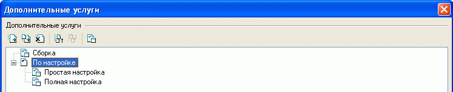
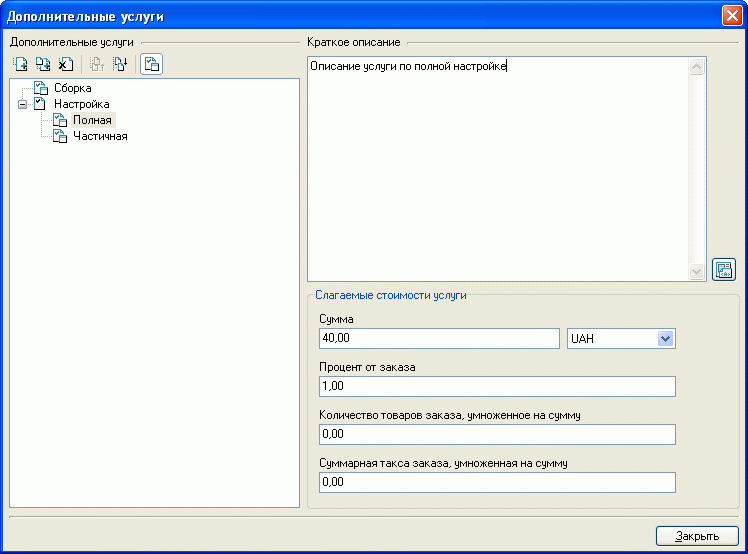
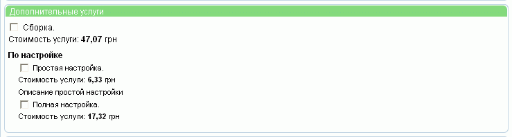

Исходя из потребностей покупателей и возможностей продавца, покупателю может быть предложено несколько вариантов дополнительных услуг (сборка, пуско-наладка, настройка и.т.д). Однако предварительно необходимо эти варианты задать.
В левой части окна "Дополнительные услуги", вызываемого из главного окна "Настройки-Дополнительные услуги", отображается дерево дополнительных услуг. Услуги могут группироваться в разделы. Разделы и сами услуги можно добавлять, удалять, переименовывать, группировать, сортировать.

Для обозначения того, чем - разделом или дополнительной услугой - является вновь созданный объект, служит кнопка , расположенная над деревом дополнительных услуг. Раздел не имеет своих значений, а только группирует схожие подразделы или услуги. Сама дополнительная услуга имеет ряд значений и описание, для задания которых в правой части окна дополнительных услуг появляется форма:

Покупателю, при его желании оформить заказ, будет выдана страница с параметрами заказа, среди которых имеется пункт "Дополнительные услуги", где приводятся все возможные дополнительные услуги с указанием конкретной величины, подлежащей оплате (дизайн страницы с указанной формой может отличаться от приведенного):
